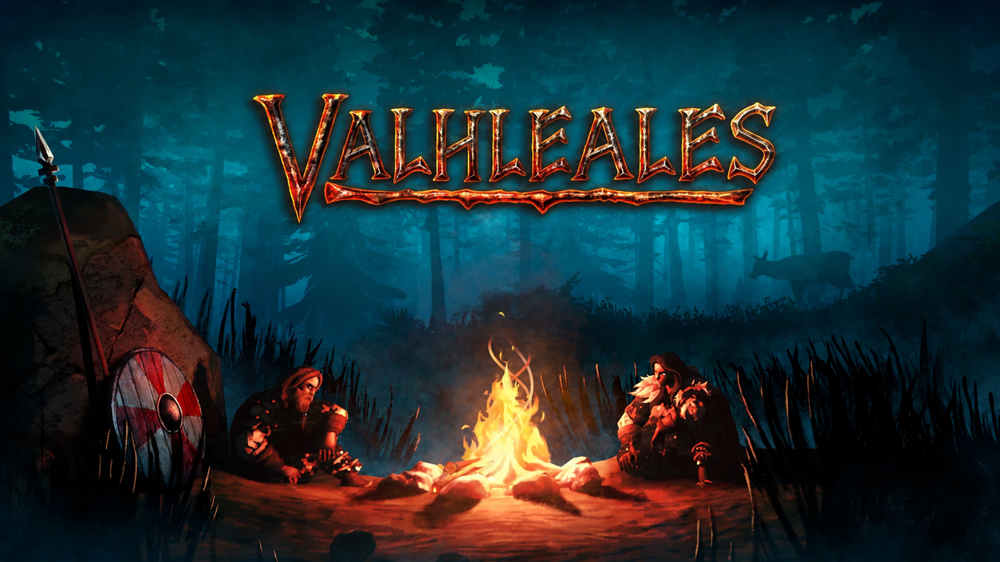
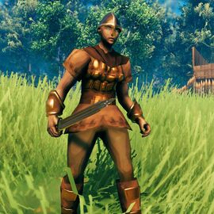

Los personajes
Para crear nuestros personajes nos basamos en algunos de nuestros idolos del Rock Nacional Argentino.

Un vikingo de espíritu indomable, Ricardo Iorio es conocido por su extraordinaria precisión con el arco y su habilidad para dominar cualquier embarcación. En combate, pocos pueden igualar su puntería a distancia, convirtiéndolo en un arquero temible tanto desde tierra como desde la cubierta de un barco.
Aunque destaca navegando y luchando a distancia, la construcción no es precisamente su fuerte. Donde otros vikingos levantan imponentes fortalezas, Ricardo prefiere mantener las manos lejos del martillo y confiar en aquellos con mayor talento para levantar muros y estructuras.
Especialidad: 🏹 Arquería · 🚢 Navegación
Fortaleza: 🎯 Precisión · 🏹 combate a distancia
Debilidad: 🪓 Construcción
Un vikingo de espíritu indomable, Charly García no destaca precisamente por su destreza en combate, pero compensa cualquier carencia con un coraje inquebrantable. Aguerrido y valiente, jamás retrocede ante un enemigo, incluso cuando las probabilidades están en su contra.
Su verdadera pasión se encuentra en la forja. Amante de las armas y armaduras, dedica gran parte de su tiempo a perfeccionar el acero con sus propias manos. Además, posee un buen dominio de la construcción, siendo capaz de levantar y reparar estructuras que resisten incluso las condiciones más adversas.
Especialidad: ⚒️ Forja · 🏗️ Construcción
Fortaleza: 🛡️ Valentía · 🔥 resiliencia
Debilidad: ⚔️ Combate
Un vikingo forjado en incontables batallas, Luca Prodan es un guerrero experimentado y temido, preparado para enfrentarse a cualquier enemigo que ose desafiarlo. Su experiencia en combate y su espíritu de liderazgo lo convierten en un comandante nato, siempre listo para reunir a sus hombres y liderar un ejército hacia la victoria.
Pero su mayor talento no termina en el campo de batalla. Experto en construcción, Luca es capaz de levantar imponentes fortalezas y transformar cualquier asentamiento en un verdadero bastión vikingo. Y cuando llega la hora de abandonar tierra firme, pocos pueden igualarlo: es el mejor domador de los mares, capaz de dominar cualquier embarcación y navegar incluso las aguas más peligrosas.
Especialidad: 🏗️ Construcción · ⚔️ Combate · 🚢 Navegación
Fortaleza: 👑 Liderazgo · ⚔️ experiencia en batalla
Debilidad: 💪 Ninguna conocida